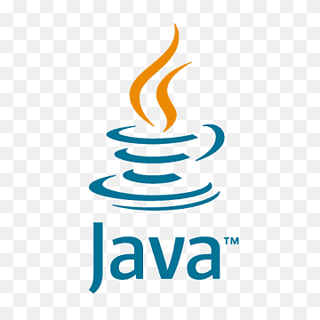
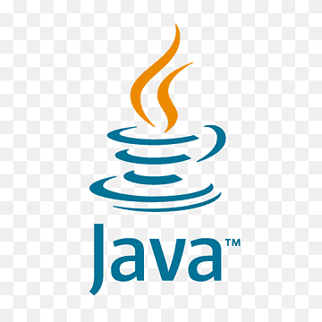
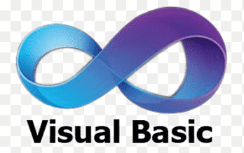
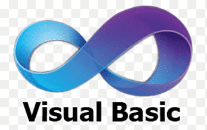
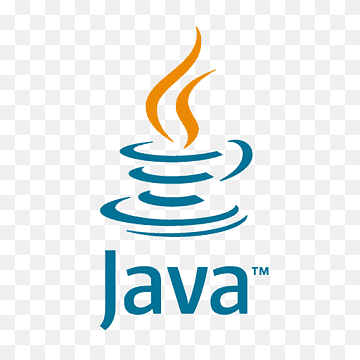
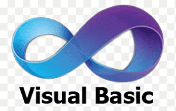

Linguagens de programação:

 



 



O desenvolvedor front-end é o arquiteto da experiência do usuário. Ele transforma designs em interfaces interativas e responsivas, área das páginas em que as pessoas podem interagir.
Isso significa que o Front-end se relaciona com as partes dos sites que mais se aproximam da experiencia ao usuário.
O desenvolvedor back-end é o responsável pela lógica e funcionalidade do site trabalhando na parte invisível para o visitante do site, usuário do aplicativo ou programa de computador.
Esta parte “invisível” é tudo que envolve o fluxo de dados entre o sistema e o servidor. São os códigos que rodam “por trás da tela”, por isso back-end.
O desenvolvedor full Stack domina tanto o front-end quanto o back-end, sendo capaz de construir um site completo do início ao fim.
Ele é um profissional versátil e requisitado, capaz de lidar com todas as etapas do software. Sua expertise abrange desde a concepção da interface do usuário, até a implementação da lógica do servidor do gerenciamento de bancos de dados e APIs.
Ele é capaz de traduzir as necessidades do cliente em soluções completas, garantindo a funcionalidade,o desempenho e a segurança da aplicação.
A carreira de Desenvolvedor Full Stack é uma das mais promissoras e requisitadas no mercado de tecnologia atual. Mas, afinal, por que se tornar um profissional com essa expertise?
Um Desenvolvedor Full Stack é aquele que domina tanto o desenvolvimento front-end quanto o back-end de aplicações web. Isso significa que ele é capaz de trabalhar em todas as camadas de um projeto, desde a interface do usuário até o banco de dados e a lógica do servidor.
Essa versatilidade oferece uma série de vantagens: Visão completa do projeto: O Desenvolvedor Full Stack entende todas as etapas do desenvolvimento, o que facilita a comunicação entre as equipes e garante que todas as partes do projeto estejam integradas.
Flexibilidade e adaptabilidade: Com conhecimento em diversas tecnologias, o Full Stack pode se adaptar a diferentes projetos e desafios, além de ser capaz de resolver problemas complexos com mais agilidade. Alta demanda no mercado: Empresas de todos os portes buscam profissionais Full Stack, o que garante uma ampla gama de oportunidades de emprego e salários competitivos.
Desenvolvimento de habilidades diversas: A carreira de Full Stack exige aprendizado constante e desenvolvimento de habilidades em diversas áreas, o que torna o profissional mais completo e valorizado.

